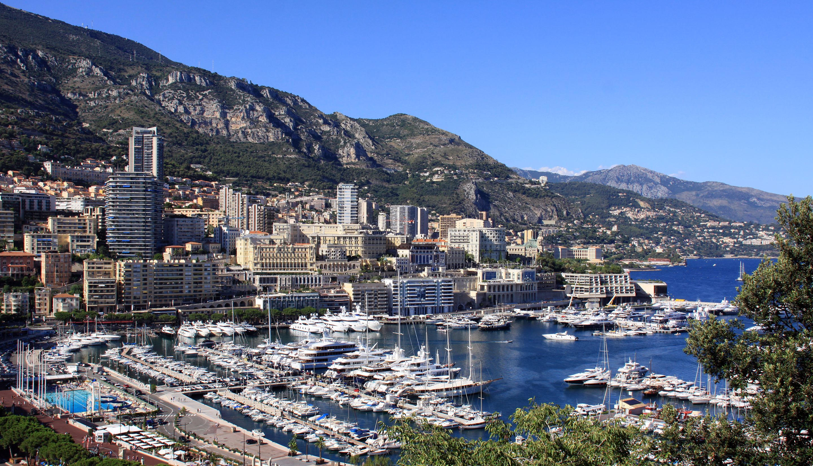

Monte Carlo /ˈmɒnti ˈkɑːrloʊ/ officially refers to an administrative area of the Principality of Monaco, specifically the ward of Monte Carlo/Spélugues, where the Monte Carlo Casino is located.
Monte Carlo (literally "Mount Charles") is situated on a prominent escarpment at the base of the Maritime Alps along the French Riviera. Near the quarter's western end is the world-famous Place du Casino, the gambling center which has made Monte Carlo "an international byword for the extravagant display and reckless dispersal of wealth".[
famed for its casinos and games of chance 